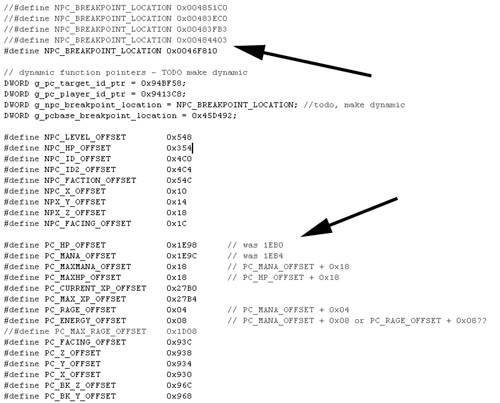

{% include JB/setup %}
{% raw %}
<div>
<a name="toppage" class="pcalibre calibre1"></a><table width="100%" border="0" cellspacing="0" cellpadding="0" class="sfbody"><tr valign="top" class="calibre2"><td class="calibre3"><a name="MainContent" class="pcalibre calibre1"></a><table width="95%" class="sfbody"><tr class="calibre2"><td class="pcalibre1 v"><!--Copyright (c) 2002 Safari Tech Books Online--><table width="100%" border="0" cellspacing="0" cellpadding="2" class="calibre4"><tr class="calibre2"><td valign="middle" class="v1 pcalibre1" height="5"></td></tr><tr class="calibre2"><td valign="middle" class="v1 pcalibre1"><table cellpadding="0" cellspacing="0" border="0" width="100%" class="calibre4"><tr class="calibre2"><td class="calibre6"><span class="calibre7"> </span>
                   
                  <span class="calibre7">   </span>
             <span class="calibre7"> </span></td></tr></table></td><td class="calibre8"/><td valign="middle" class="v2 pcalibre1"> 
           
          <span class="calibre7"><a target="_self" href="ch06lev1sec5.html" title="Previous section" class="pcalibre calibre1"></a></span>
				
				 
				
				<span class="calibre7"><a target="_self" href="ch06lev1sec7.html" title="Next section" class="pcalibre calibre1"></a></span></td></tr></table><div id="section" class="calibre15"><table width="100%" border="0" cellspacing="0" cellpadding="0" class="calibre4"><tr class="calibre2"><td valign="top" class="calibre8"><a href="10061538.html" class="pcalibre calibre1"></a>Security Game Programming Networking Programming Greg Hoglund Gary McGraw Addison Wesley Professional Exploiting Online Games: Cheating Massively Distributed Systems<a name="ch06lev1sec6" class="pcalibre calibre1"></a>
<h3 id="title-IDAUQZ5H" class="docSection1Title">Getting In the Game: Manipulating Game Objects</h3>
<p class="docText">As we've shown, everything in a game eventually boils down to data—even the client code. Many game hacks are based solely on reading data for objects that are normally not visible but are nevertheless present in client memory. (Recall our magic potion example from earlier.) All you need for these hacks is to open your eyes. Other hacks are based on writing select values to process memory, including such things as player position. These hacks merely involve changing things a bit. The hacks we present here don't alter any code, but they do manipulate the data that the client code interprets and uses.</p>
<p class="docText">We know by now that game objects, including items, inventory, monsters, and other players, are all stored somewhere in memory. These kinds of things are usually stored as groups or lists of objects. Some games make use of a generic object management system, where the same kinds of list structures are used for everything. Many games are constructed in C++ and make use of object-oriented design, where lists are the basic type (base class), with subclasses for each specific game object type.</p>
<p class="docText">Let's make this concrete. In some versions of WoW, the following structure is used to track game objects.<sup class="docFootnote"><a class="pcalibre6 pcalibre5 calibre1" href="#ch06fn05">[5]</a></sup> The game uses a doubly linked list with a set of object-specific values:</p><blockquote class="calibre24"><p class="docFootnote1"><sup class="calibre31"><a name="ch06fn05" class="pcalibre calibre1">[5]</a></sup> We say "some versions" because WoW and other online games are in a constant state of evolution.</p></blockquote>
<div class="docText1"><pre class="calibre43">typedef struct
{
       DWORD id;
       DWORD unk1;
       DWORD unk2;
       void *prev;  // previous entry
       void *next;  // next entry
       DWORD unk3;
       DWORD unk4;
       DWORD unk5;
       char *name1;
       char *name2;
       char *name3;
       char *name4;
       DWORD unk6[16];
       DWORD id2;
} gob_list_struct;
</pre></div><br class="calibre15"/>
<p class="docText"><a name="iddle1698" class="pcalibre calibre1"></a><a name="iddle1773" class="pcalibre calibre1"></a><a name="iddle2265" class="pcalibre calibre1"></a>There are many other ways to store objects in programs that don't rely on doubly linked lists like the one shown here. Sometimes games use standard issue lists, binary trees, or hash tables. In fact, games make use of all of the common data structures you can learn about in computer science classes.</p>
<p class="docText">Once you determine how game objects are represented and where they have been squirreled away in memory, you can make adjustments to memory to suit your needs.</p>
<a name="ch06lev2sec13" class="pcalibre calibre1"></a>
<h4 id="title-IDAQSZ5H" class="docSection2Title">The Problem of Moveable Memory</h4>
<p class="docText">Yet making adjustments to memory by direct manipulation may lead to its own problems. In fact, there is one major obstacle to overcome. Memory locations don't just sit there waiting for you to come along; stuff in memory gets moved around a lot. In many cases, once you find something in memory (such as the magic potion strength field we talked about before), you will want to come back and keep accessing it. That's great if it stays put; but what if it doesn't? You might want to read a coordinate once a second, or write to a variable every time you fire your weapon. If the memory location is not static—that is, if it moves frequently—you may have to go poking around for it each and every time you use it. This is tedious, and in the worst cases it can screw up your plan.</p>
<p class="docText">The good news is that sometimes memory locations are static—that is, particular memory locations are hard-coded into the software so they really can't move. The memory location we introduced earlier in <a class="pcalibre6 pcalibre5 calibre1" href="ch06lev1sec3.html#ch06fig07">Figure 6-7</a> is <a name="iddle1814" class="pcalibre calibre1"></a><a name="iddle2269" class="pcalibre calibre1"></a>such an example. In this case, the memory location is reliable, so you can continue to use it repeatedly. But even in this case there remains a subtle problem—the problem of patching. Games are patched all the time; in fact, most MMOs are patched almost weekly. Patches move things around by altering the actual game client software, thus often moving hard-coded locations for data as a side effect.</p>
<p class="docText">Bot developers are plagued by this problem. <a class="pcalibre6 pcalibre5 calibre1" href="#ch06fig12">Figure 6-12</a> shows an example of source code for a WoW bot. You can see in the code itself how the developer has commented out several previous hard-coded addresses in favor of new ones. Every time a patch is released, the game hacker has been forced to update the bot source code. This can become quite a chore.</p>
<a name="ch06fig12" class="pcalibre calibre1"></a><p class="calibre28"><center class="calibre29">
<h5 class="docFigureTitle">Figure 6-12. Code for a WoW bot. You can see in the code where the developer has updated the source several times to keep up with patches.</h5>
</center></p><p class="docText"><div class="v8 pcalibre3 pcalibre2"><a target="_blank" href="fig06-12_alt.jpg" class="pcalibre calibre20">[View full size image]</a></div></p>
<br class="calibre15"/>
<p class="docText">There are some nice ways to avoid the problem of updating constantly changing memory locations that are hard coded. The main idea is to use dynamic methods for finding memory locations on the fly so you don't have to update your source code every time a new patch comes out.</p>
<a name="ch06lev2sec14" class="pcalibre calibre1"></a>
<h4 id="title-IDA1UZ5H" class="docSection2Title">Rounding Up the Usual Suspects</h4>
<p class="docText"><a name="iddle1718" class="pcalibre calibre1"></a><a name="iddle1782" class="pcalibre calibre1"></a><a name="iddle1838" class="pcalibre calibre1"></a><a name="iddle1840" class="pcalibre calibre1"></a><a name="iddle1857" class="pcalibre calibre1"></a><a name="iddle2264" class="pcalibre calibre1"></a><a name="iddle2266" class="pcalibre calibre1"></a><a name="iddle2271" class="pcalibre calibre1"></a><a name="iddle2272" class="pcalibre calibre1"></a><a name="iddle2274" class="pcalibre calibre1"></a>In terms of development technique, several common objects are used in almost all games. These include the following:</p>
<ul class="calibre18"><li class="calibre19"><p class="docText">Player object: the structure that represents the player's character</p></li><li class="calibre19"><p class="docText">Other player objects: other, real players in multiuser environments</p></li><li class="calibre19"><p class="docText">Nonplayer characters (NPCs) and mobs (short for "mobiles"): nonplayer entities such as shop merchants and monsters</p></li></ul>
<p class="docText">In the upcoming subsections, we'll take a quick look at examples of each of these objects so you can learn how to find and manipulate these structures for yourself.</p>
<a name="ch06lev3sec13" class="pcalibre calibre1"></a>
<h5 id="title-IDAIYZ5H" class="docSection3Title">Player Data Structures</h5>
<p class="docText">All MMOs include the concept of an in-game character. The character is your alter ego in the game universe. Somewhere in memory, a data structure exists that describes this character. It contains such things as the 3D coordinates for your character's location, health status, and various ability ratings (e.g., strength, magic power). Clearly these data must be stored on the game server, but sometimes the client program controls the values directly. Whenever this is the case, the character data are at risk. This is a prime example of a software security no-no, where the client is trusted even though it is not trustworthy.</p>
<p class="docText">There's often a good reason for this. Storing every bit of state about a game on a central server and keeping all gazillion game clients up to date in real time takes too much bandwidth. Today's Internet can't handle the traffic. To get more specific, consider managing location coordinates in 3D space.</p>
<p class="docText">Because it takes too much bandwidth to have the server manage 3D coordinates for every single object in the game as thousands of users manipulate them, the game client controls the position and updates it as you move your character around. Every so often, the client software updates the server with the new location.</p>
<p class="docText">Do you see the potential exploit? It's easy! Simply set the 3D coordinates in memory by using a debugger tool. These values are usually stored as three float values corresponding to the three dimensions. In some versions of WoW, the server does not check the validity of any movement. Instead, it blithely accepts new values provided by its client software. That means when you update the 3D values by means beyond the game, you can in some sense instantaneously teleport your character in the WoW universe.</p>
<p class="docText">Let's make this clear. The following listing shows a character structure reverse engineered from an early version of the WoW client program. You can plainly observe that the player structures are stored in a doubly linked list (<tt class="calibre38">next</tt> and <tt class="calibre38">prev</tt> pointers making up the first two members). Several fields were not reverse engineered, delimited below as <tt class="calibre38">unk</tt> for "unknown." What is particularly significant are the 48-byte <tt class="calibre38">name</tt> field, the <tt class="calibre38">race_type</tt> field, and the <tt class="calibre38">class_type</tt> field.</p>
<div class="docText1"><pre class="calibre43">typedef struct
{
       void *next;
       void *prev_pc;
       DWORD unk1;
       DWORD id;
       DWORD unk2;
       CHAR name[48];
       DWORD id2;
       DWORD unk3;
       DWORD race_type;
       DWORD unk4[2];
       DWORD class_type;
       DWORD id3;
       DWORD unk5[3];
} pc_list_struct;
</pre></div><br class="calibre15"/>
<p class="docText">In the structure above, the following integer values for race and class were observed (over the course of checking out several characters). These values were obtained by watching the game program in a debugger and cross-referencing a known character's name with its race and class. Pretty simple!</p>
<div class="docText1"><pre class="calibre43">// race:
// 3 = dwarf
// 7 = gnome

// class:
// 1 = warrior
// 2 = paladin
// 3 = hunter
// 4 =
// 5 = priest
// 6 =
// 7 =
// 8 = mage
</pre></div><br class="calibre15"/>
<p class="docText"><a name="iddle2275" class="pcalibre calibre1"></a><a name="iddle2279" class="pcalibre calibre1"></a><a name="iddle2298" class="pcalibre calibre1"></a>It is easy to determine how characters are represented. Naturally, it is easy to experiment with changing these values as well.</p>
<p class="docText">There are many more such data structures present in a game. Part of the task of a game hacker is to identify these structures and use them to some advantage later.</p>
<a name="ch06lev2sec15" class="pcalibre calibre1"></a>
<h4 id="title-IDAZ0Z5H" class="docSection2Title">Reading the File from Disk</h4>
<p class="docText">When dealing with a dynamic environment, patched games, and so on, it can sometimes make sense to read the file from disk and search for symbols or byte sequences. This way, even if the game gets patched, your hacking tools or botting program can still find the location it needs to patch, set a breakpoint on, or otherwise use.</p>
<p class="docText">The Windows registry can sometimes help you find the location of the game client on disk. The following code snippet shows how to open and query the Windows registry. This example locates the binary for WoW by checking the keys and values that the game installs in the registry.</p>
<div class="docText1"><pre class="calibre43">void WowzerEngine::InitWowLocation()
{
       HKEY hKey;
       char szValue[MAX_PATH];
       DWORD dwSize = MAX_PATH;
       HANDLE hFile, hMap;
</pre></div><br class="calibre15"/>
<p class="docText"><tt class="calibre38">RegOpenKey</tt> takes the root hive you will be reading, in this case,<tt class="calibre38">HKEY_LOCAL_MACHINE</tt>, and the full path to the key you want to open. If the call is successful, the handle to the key ends up being stored in <tt class="calibre38">hKey</tt>.</p>
<div class="docText1"><pre class="calibre43">       if(RegOpenKeyEx(HKEY_LOCAL_MACHINE,
               "SOFTWARE\\Blizzard Entertainment\\World of
Warcraft",
               0,
               KEY_QUERY_VALUE,
               &amp;hKey) == ERROR_SUCCESS)
       {
</pre></div><br class="calibre15"/>
<p class="docText">Once the key is opened, you can query any values stored under the key. Here we query <tt class="calibre38">GamePath</tt> to learn the path to the WoW client executable.</p>
<div class="docText1"><pre class="calibre43">         if(RegQueryValueEx(
                hKey,
                "GamePath",
                NULL,
                NULL,
                (LPBYTE)szValue,
                       &amp;dwSize) == ERROR_SUCCESS)
         {
                   strcpy(wow_location, szValue);
         }
         else
         {
                   MessageBox(
                           NULL,
                           "Warning, could not find WoW.EXE -
cannot init pointer values.",
                           "Cannot continue...",
                           MB_OK);
         }
       RegCloseKey(hKey);
       }
</pre></div><br class="calibre15"/>
<p class="docText">Once we find the executable, we open a file handle to it so we can read (and potentially write) to it. In this case, we only read the file and use the data for looking up byte sequences, patterns, and symbols in the file.</p>
<div class="docText1"><pre class="calibre43">hFile = CreateFile(
        wow_location,
        GENERIC_READ,
        FILE_SHARE_READ,
        NULL,
        OPEN_EXISTING,
        FILE_FLAG_SEQUENTIAL_SCAN,
        NULL);
if(hFile != INVALID_HANDLE_VALUE)
{
</pre></div><br class="calibre15"/>
<p class="docText">This call maps the file into memory so we can scan it more easily.</p>
<div class="docText1"><pre class="calibre43">    hMap = CreateFileMapping(
           hFile,
           NULL,
           PAGE_READONLY,
           0,
           0,
           NULL);

    if(hMap)
            pbFile =  (PBYTE)MapViewOfFile(
                       hMap,
                       FILE_MAP_READ,
                       0,
                       0,
                       0);
     }

     if(!pbFile)
     {
            MessageBox(
                       NULL,
                       "Could not map WoW.EXE",
                       "Error",
                       MB_OK);
     }
}
</pre></div><br class="calibre15"/>
<p class="docText"><a name="iddle1215" class="pcalibre calibre1"></a><a name="iddle1818" class="pcalibre calibre1"></a><a name="iddle2270" class="pcalibre calibre1"></a>Finding game files using the registry is a common and useful technique with Windows-based games.</p>
<a name="ch06lev2sec16" class="pcalibre calibre1"></a>
<h4 id="title-IDA13Z5H" class="docSection2Title">Parsing the PE Header</h4>
<p class="docText">The game file itself is a Win32 Portable Executable (PE). Most Windows .exe files are in PE format, which is very well documented.<sup class="docFootnote"><a class="pcalibre6 pcalibre5 calibre1" href="#ch06fn06">[6]</a></sup> Because of this, we are not going to cover the PE format in detail here. The following code snippets are used to look up various things in the PE header. These examples are based on code adapted from Bubba's WoW Hack (BWH).<sup class="docFootnote"><a class="pcalibre6 pcalibre5 calibre1" href="#ch06fn07">[7]</a></sup> You can search on the Net if you want to find the original source code to BWH.</p><blockquote class="calibre24"><p class="docFootnote1"><sup class="calibre31"><a name="ch06fn06" class="pcalibre calibre1">[6]</a></sup> An introductory article on the PE file format can be found at &lt;<a class="pcalibre6 pcalibre5 calibre1" target="_blank" href="http://www.windowsitlibrary.com/Content/356/11/1.html">http://www.windowsitlibrary.com/Content/356/11/1.html</a>&gt;.</p></blockquote><blockquote class="calibre24"><p class="docFootnote1"><sup class="calibre31"><a name="ch06fn07" class="pcalibre calibre1">[7]</a></sup> You can find Bubba's WoW Hack hosted at a number of Web sites. Try this one: &lt;<a class="pcalibre6 pcalibre5 calibre1" target="_blank" href="http://firepacket.net/WoW">http://firepacket.net/WoW</a>&gt;.</p></blockquote>
<p class="docText">Before you can scan the PE file with the techniques shown here, you need to locate the code section. Once you do that, the examples are straightforward.</p>
<p class="docText">PE headers can also be used to find other information in the file, including embedded resources such as images, named functions that are imported or exported, and the data section. Some of the scanning techniques shown here rely on parsing the PE header. The basic PE parser support functions used in our examples are shown below.</p>
<div class="docText1"><pre class="calibre43">DWORD OffsetToRva(PBYTE pbImage, DWORD dwOffset)
{
       //ripped from bwh
       DWORD dwSecBorder = -1;
       PIMAGE_NT_HEADERS pNt =
               PIMAGE_NT_HEADERS(
               pbImage + PIMAGE_DOS_HEADER(pbImage)-&gt;e_lfanew);
       PIMAGE_SECTION_HEADER pSec =
               PIMAGE_SECTION_HEADER(PBYTE(pNt) +
       sizeof(IMAGE_NT_HEADERS)); for(DWORD x = 0; x &lt; pNt-&gt;
       FileHeader.NumberOfSections; x++)
       {
        if( dwOffset &gt;= pSec[x].PointerToRawData &amp;&amp;
            dwOffset &lt; pSec[x].PointerToRawData  +
            pSec[x].SizeOfRawData)
          return (dwOffset -
                  pSec[x].PointerToRawData +
                  pSec[x].VirtualAddress);
        if( pSec[x].PointerToRawData &amp;&amp;
            pSec[x].PointerToRawData &lt; dwSecBorder)
          dwSecBorder = pSec[x].PointerToRawData;
       }
       if(dwOffset &lt; dwSecBorder)
         return dwOffset;
       else
         return NULL;
}
</pre></div><br class="calibre15"/>
<p class="docText">The following helper function converts a relative virtual address (RVA) to an actual memory pointer that can be used in a memory read-or-write operation.</p>
<div class="docText1"><pre class="calibre43">PBYTE RvaToPointer(PBYTE pbImage, DWORD dwRva)
{
       //ripped from bwh
       DWORD dwSecBorder = -1;
       PIMAGE_NT_HEADERS pNt =
              PIMAGE_NT_HEADERS(
              pbImage +
              PIMAGE_DOS_HEADER(pbImage)-&gt;e_lfanew);
       PIMAGE_SECTION_HEADER pSec =
              PIMAGE_SECTION_HEADER(PBYTE(pNt) +
              sizeof(IMAGE_NT_HEADERS));
       for(DWORD x = 0; x &lt; pNt-&gt;FileHeader.NumberOfSections; x++)
       {
        if( dwRva &gt;= pSec[x].VirtualAddress &amp;&amp;
            dwRva &lt; pSec[x].VirtualAddress  +
            pSec[x].Misc.VirtualSize)
          return( pbImage +
                  (dwRva - pSec[x].VirtualAddress +
                  pSec[x].PointerToRawData));

        if( pSec[x].PointerToRawData &amp;&amp;
            pSec[x].PointerToRawData &lt; dwSecBorder)
          dwSecBorder = pSec[x].PointerToRawData;
       }
       if(dwRva &lt; dwSecBorder)
         return pbImage + dwRva;
       else
         return NULL;
}
</pre></div><br class="calibre15"/>
<p class="docText"><a name="iddle2257" class="pcalibre calibre1"></a>PE file basics come in very handy when looking for various game data.</p>
<a name="ch06lev2sec17" class="pcalibre calibre1"></a>
<h4 id="title-IDAGA05H" class="docSection2Title">Looking Around for Stuff</h4>
<p class="docText">As we briefly demonstrate above, many data values are stored globally. When the game code is compiled, hard-coded pointers to these global storage locations are placed inline with the code. We can begin our bot experiment by looking for a hard-coded data pointer.</p>
<p class="docText">There are two good ways to find game code you're looking for. The first is to scan code directly from an in-memory image of the loaded code. The second is to map it from the file on disk. Either way works. The in-memory image is often more accurate when it comes to where things end up, but unless the game client specifically reorders itself in memory or employs other sneaky forms of obfuscation, the on-disk version usually works just as well as the in-memory version. With either, you end up dealing with a handle to some memory. If you're loading from disk, you can first map the file into memory and get your memory pointer that way. If you're looking directly at memory, you can just obtain a pointer to the right place.</p>
<p class="docText">The following examples are based on code adapted from BWH. Note that many of these techniques are directly detectable now, and use of them will get your character banned. The code uses an open file handle and parses the file's PE header information to locate the code section. Then it subsequently scans through a bunch of opcodes. Finally, it finds a globally stored value and reads it.</p>
<p class="docText"><a name="iddle1325" class="pcalibre calibre1"></a><a name="iddle1326" class="pcalibre calibre1"></a><a name="iddle1940" class="pcalibre calibre1"></a><a name="iddle2255" class="pcalibre calibre1"></a><a name="iddle2263" class="pcalibre calibre1"></a>The code itself is particularly hard to read because of all the hard-coded values, but it does give a clear indication of the nested data in the game. That is, one pointer points to the next, which points to the next, and so on. Basically, you follow the chain all the way to the particular memory glob you're after.</p>
<p class="docText">All of these common data are indispensable for a bot. The data include clues about geometry, hitpoints, positions of objects, and object states. Position information is obviously required for a bot to know where it is in the world and how it exists in relation to other things.</p>
<p class="docText">So, once we have the file loaded up, let's look for some interesting items. These examples show you lookups for things specific to the WoW game client.</p>
<a name="ch06lev3sec14" class="pcalibre calibre1"></a>
<h5 id="title-IDAHC05H" class="docSection3Title">Player Character Corpse Identification</h5>
<p class="docText">When your character dies in the WoW game, the corpse is left behind, and your character appears at the graveyard. You need to be able to get back to your corpse in order to resurrect and continue playing. Any good botting program should be able to do this automatically. You can either teleport/ telehack to the corpse location or drive the character manually over the terrain to the corpse location. Either way, to proceed, you need to be able to read the coordinates of the corpse location. The following snippet scans for the memory location where the corpse coordinate is stored. Once again, these examples were taken from BWH.</p>
<div class="docText1"><pre class="calibre43">DWORD WowzerEngine::GetLoc_PCorpse()
{
       // ripped from bwh
       DWORD x, y;
       PIMAGE_NT_HEADERS pNtHdr = PIMAGE_NT_HEADERS(pbFile +
              PIMAGE_DOS_HEADER(pbFile)-&gt;e_lfanew);
       PIMAGE_SECTION_HEADER pSecHdr =
              PIMAGE_SECTION_HEADER(pNtHdr + 1);
       PBYTE pbCode =
              RvaToPointer(
                     pbFile,
                     pSecHdr[0].VirtualAddress );
       DWORD dwCodeSize =
              pSecHdr[0].SizeOfRawData;
</pre></div><br class="calibre15"/>
<p class="docText">The code here scans for the following opcodes. The pattern is long enough that it will match only on the intended location—it won't match on any false positives.</p>
<div class="docText1"><pre class="calibre43">BYTE bCode[] =
       {0xD9, 0xC0, 0xD8, 0xC9, 0xD9,
        0xC3, 0xD8, 0xCC, 0xDE, 0xC1,
        0xD9, 0xC2, 0xD8, 0xCB, 0xDE,
        0xC1, 0xD8, 0x1D};

for(x = 0; x &lt; dwCodeSize; x++)
{
  if(MemoryCompare(&amp;pbCode[x], bCode, sizeof(bCode)))
    {
</pre></div><br class="calibre15"/>
<p class="docText"><a name="iddle1783" class="pcalibre calibre1"></a><a name="iddle2256" class="pcalibre calibre1"></a>This rather nasty bit of code dereferences a hard-coded pointer. This is a pointer to a global value that stores the corpse location. Unfortunately, the code is very hard to follow and could probably be much cleaner. However, you can see that it scans backwards from the code location that was matched earlier. If it finds what it's looking for, it returns the hard-coded pointer.</p>
<div class="docText1"><pre class="calibre43">                if(*((PWORD)&amp;pbCode[x-6]) == 0x25D8)
                  {
                    for(y = 0; y &lt; 30; y++)
                    {
                      if(pbCode[x-6-y] == 0xFF)
                        return *((PDWORD)&amp;pbCode[x-4]) - 8;
                     }
                   }
           }
       }
       return NULL;
}
</pre></div><br class="calibre15"/>
<a name="ch06lev3sec15" class="pcalibre calibre1"></a>
<h5 id="title-IDACE05H" class="docSection3Title">Placing an NPC Breakpoint</h5>
<p class="docText">Using the same technique that we used to find the corpse for the player character, this snippet scans for a bit of code that handles the linked list of NPCs. This code location is then used with a breakpoint on the running client. The way this works is simple—the breakpoint eventually fires when an NPC structure is processed. When the breakpoint fires, the pointer to the NPC structure can be obtained from one of the registers on the CPU. This first NPC structure points to all of the rest since they are in a linked list. Thus, using a single breakpoint, you can obtain the entire dynamically located NPC list.</p>
<div class="docText1"><pre class="calibre43">DWORD WowzerEngine::GetLoc_NPC_Breakpoint()
{
       // ripped from bwh
       DWORD x, y;
       PIMAGE_NT_HEADERS pNtHdr =
              PIMAGE_NT_HEADERS(
              pbFile + PIMAGE_DOS_HEADER(pbFile)-&gt;e_lfanew);
       PIMAGE_SECTION_HEADER pSecHdr =
              PIMAGE_SECTION_HEADER(pNtHdr + 1);
       PBYTE pbCode = RvaToPointer(pbFile,
              pSecHdr[0].VirtualAddress);
       DWORD dwCodeSize = pSecHdr[0].SizeOfRawData;
</pre></div><br class="calibre15"/>
<p class="docText"><a name="iddle1836" class="pcalibre calibre1"></a><a name="iddle2259" class="pcalibre calibre1"></a>At this point, the pointer to the code section and its length have been uncovered. What is interesting is that a memory compare with a string of bytes is now used to find the location of interest. Once we find what we're looking for (a match), the address of the location is returned. We'll use this address in a subsequent operation.</p>
<div class="docText1"><pre class="calibre43">       BYTE bCode[] =
       {0x8B, 0x41, 0x38, 0x8B,
        0x49, 0x3C, 0x83, 0xEC,
        0x40, 0x8B, 0xD0, 0x0B, 0xD1};


       for(x = 0; x &lt; dwCodeSize; x++)
       {
         if(MemoryCompare(&amp;pbCode[x], bCode, sizeof(bCode)))
           {
           return *((PDWORD)&amp;pbCode[x]);
           }
        }
       return NULL;
}
</pre></div><br class="calibre15"/>
<a name="ch06lev3sec16" class="pcalibre calibre1"></a>
<h5 id="title-IDAVF05H" class="docSection3Title">Uncovering the Player Character Camera Angle</h5>
<p class="docText">This snippet is slightly different than the ones presented earlier, in that it doesn't use an array of opcodes to scan; instead, it just compares values. Otherwise, it does generally the same thing. This snippet returns the location that stores the camera angle.</p>
<div class="docText1"><pre class="calibre43">DWORD WowzerEngine::GetLoc_PCameraAngle()
{
       // ripped from bwh
       DWORD x;
       PIMAGE_NT_HEADERS pNtHdr =
              PIMAGE_NT_HEADERS(
              pbFile + PIMAGE_DOS_HEADER(pbFile)-&gt;e_lfanew);
       PIMAGE_SECTION_HEADER pSecHdr =
              PIMAGE_SECTION_HEADER(pNtHdr + 1);
       PBYTE pbCode =
              RvaToPointer(pbFile, pSecHdr[0].VirtualAddress);
</pre></div><br class="calibre15"/>
<p class="docText">The program uses Windows-supplied SDK functions to parse the PE header. By doing this, it subsequently finds the code section. It now gets the length of the code section and scans through the entire range looking for the 32-bit value <tt class="calibre38">0xD8DDD8DD</tt>.</p>
<div class="docText1"><pre class="calibre43">DWORD dwCodeSize = pSecHdr[0].SizeOfRawData;
for(x = 0; x &lt; dwCodeSize; x++)
{
  if(*((PDWORD)&amp;pbCode[x]) == 0xD8DDD8DD)
    {
</pre></div><br class="calibre15"/>
<p class="docText">Now that we have discovered the target value, we need to check several other values nearby. If everything we're looking for is there, the code scanner has located the function of interest. This function uses a globally stored value. The code reads the pointer to this value as <tt class="calibre38">x+6</tt> and returns what is pointed to—in other words, it dereferences the pointer and retrieves the dynamic value from memory.</p>
<div class="docText1"><pre class="calibre43">               if(*((PWORD)&amp;pbCode[x+4]) == 0x05D9)
                 {
                   if(*((PWORD)&amp;pbCode[x+10]) == 0x05D9)
                     {
                       if(*((PWORD)&amp;pbCode[x+16]) == 0xF3D9)
                       {
                         return *((PDWORD)&amp;pbCode[x+6]);
                       }
                     }
                 }
            }
        }
        return NULL;
}
</pre></div><br class="calibre15"/>
<p class="docText"><a name="iddle1835" class="pcalibre calibre1"></a><a name="iddle1839" class="pcalibre calibre1"></a><a name="iddle2258" class="pcalibre calibre1"></a><a name="iddle2273" class="pcalibre calibre1"></a>Even though this code is ugly and is by no means well documented, the technique is sound. Using this approach, the scanner can locate a given function even if the program is patched (which happens to WoW clients and other game clients with some regularity). This means that even if the function moves about due to a patch, our scanner can still locate it and read the correct global memory address.</p>
<a name="ch06lev3sec17" class="pcalibre calibre1"></a>
<h5 id="title-IDAOI05H" class="docSection3Title">Finding the Player Character Block</h5>
<p class="docText">The next scan locates where the player's character structure is stored. The character structure is very important since it has the character's current location, health, magic points (mana), and so on. Unfortunately, you can't hack WoW simply by overwriting your hitpoints with a new value because the server keeps the hitpoints on its end. But the character block is invaluable for managing your bot.</p>
<p class="docText">This snippet shows a rather interesting trick. The WoW client and many other games store debug strings in the binary that are used for error messages or for debugging the game client. You can use some of these strings to locate functions you're interested in. In the case of WoW, some of these strings actually contain the names of the source code files used to build the actual client. Pretty neat. At any rate, the following snippet scans for the character by first finding a known debug string.</p>
<div class="docText1"><pre class="calibre43">DWORD WowzerEngine::GetLoc_PCharBlock()
{
       // ripped from bwh
       DWORD x,y;
       PIMAGE_NT_HEADERS pNtHdr =
              PIMAGE_NT_HEADERS(
              pbFile + PIMAGE_DOS_HEADER(pbFile)-&gt;e_lfanew);
       PIMAGE_SECTION_HEADER pSecHdr =
              PIMAGE_SECTION_HEADER(pNtHdr + 1);
       PBYTE pbData = RvaToPointer(pbFile,
              pSecHdr[2].VirtualAddress);
       DWORD dwDataSize = pSecHdr[2].SizeOfRawData;
       PBYTE pbCode = RvaToPointer(pbFile,
              pSecHdr[0].VirtualAddress);
       DWORD dwCodeSize = pSecHdr[0].SizeOfRawData;
       PBYTE pbString = NULL;
       BYTE bCode[] = {0xBA, 0, 0, 0, 0};

       // scan for "..\Object/ObjectClient/Player_C.h" in the
       // data section
       for(x = 0; x &lt; dwDataSize - 15; x++)
         {
           if(MemoryCompare(
                 &amp;pbData[x],
                 (PBYTE)"..\\Object/ObjectClient/Player_C.h", 33))
             {
               pbString = &amp;pbData[x];
               break;
             }
         }

       // if we didn't find it then return failure
       if(pbString == NULL)
         return NULL;

       // build code search pattern
       *((PDWORD)&amp;bCode[1]) =
              OffsetToRva(
              pbFile,
              (DWORD)(pbString - pbFile)) +
                     pNtHdr-&gt;OptionalHeader.ImageBase;

       // search for the code
       for(x = 0; x &lt; dwCodeSize - sizeof(bCode); x++)
         {
           if(MemoryCompare(&amp;pbCode[x], bCode, sizeof(bCode)))
             {
               // found the first code, now search for next call
               for(y = x; y &lt; x + 20; y++)
                {
                  if(pbCode[y] == 0xE8)
                  {
                  // found call instruction;
                  // decode the instruction for the pointer
                    return OffsetToRva(
                           pbFile,
                           (DWORD)(&amp;pbCode[y] - pbFile)) +
                                pNtHdr-&gt;OptionalHeader.ImageBase +
                                5 + *((PDWORD)&amp;pbCode[y+1]);
                  }
                }
             }
         }
         return NULL;
}
</pre></div><br class="calibre15"/>
<a name="ch06lev3sec18" class="pcalibre calibre1"></a>
<h5 id="title-IDAIJ05H" class="docSection3Title">Locating Player Character Data</h5>
<p class="docText"><a name="iddle1837" class="pcalibre calibre1"></a><a name="iddle2260" class="pcalibre calibre1"></a>Again, another snippet of the same flavor, only this time you can locate character data.</p>
<div class="docText1"><pre class="calibre43">DWORD WowzerEngine::GetLoc_PCharData()
{
       // ripped from bwh
       DWORD x, y;
       PIMAGE_NT_HEADERS pNtHdr =
              PIMAGE_NT_HEADERS(
              pbFile + PIMAGE_DOS_HEADER(pbFile)-&gt;e_lfanew);
       PIMAGE_SECTION_HEADER pSecHdr =
              PIMAGE_SECTION_HEADER(pNtHdr + 1);
       PBYTE pbCode = RvaToPointer(pbFile,
              pSecHdr[0].VirtualAddress);
       DWORD dwCodeSize = pSecHdr[0].SizeOfRawData;

       for(x = 0; x &lt; dwCodeSize; x++)
         {
           // scan for mov ???, [???+D0]
           //          mov ???, [???+D4]
           if(pbCode[x] == 0x8B &amp;&amp;
             *((PDWORD)&amp;pbCode[x+2]) == 0xD0 &amp;&amp;
             pbCode[x+6] == 0x8B &amp;&amp;
             *((PDWORD)&amp;pbCode[x+8]) == 0xD4)
           {
             // found it; now search for the
             // next mov above it to get the pointer
             for(y = x-1; y &gt; x - 20; y-)
               {
                 if(pbCode[y] == 0x8B)
                   return *((PDWORD)&amp;pbCode[y+2]);
                 if(pbCode[y] == 0xA1)
                   return *((PDWORD)&amp;pbCode[y+1]);
                }
            }
         }
         return NULL;
}
</pre></div><br class="calibre15"/>
<p class="docText">So, we have seen how to scan the game program to find all kinds of interesting data pointers and code locations. Once we have this basic technique, it would be useful to build a general tool that will scan the game program after every patch in order to update said pointers.</p>
<a name="ch06lev2sec18" class="pcalibre calibre1"></a>
<h4 id="title-IDAVK05H" class="docSection2Title">Building a WoW Decompiler</h4>
<p class="docText"><a name="iddle1390" class="pcalibre calibre1"></a><a name="iddle1861" class="pcalibre calibre1"></a><a name="iddle2261" class="pcalibre calibre1"></a><a name="iddle2318" class="pcalibre calibre1"></a>Many game hackers are constantly frustrated by updates and patches game companies release for their online games. Blizzard is no exception. To get around this problem, we built a general tool called the WoW Decompiler. The program is not really a decompiler at all, but rather a very useful pointer finder of sorts.</p>
<p class="docText">The strategy is simple: We have a copy of <tt class="calibre38">WoW.exe</tt> that we have already disassembled in order to find all the code and data pointers. When a new version of <tt class="calibre38">WoW.exe</tt> is released via a patch, we can leverage what we already know from the previous version and apply it to the new version to find all the same locations. The code to our tool follows.</p>
<div class="docText1"><pre class="calibre43">#include "stdafx.h"
</pre></div><br class="calibre15"/>
<p class="docText">The program first loads <tt class="calibre38">WoW.exe</tt> into memory and scans it for structures that we know about. We set up global pointers for this:</p>
<div class="docText1"><pre class="calibre43">DWORD g_binBufSize = 0;
char *g_binBuf = NULL;

bool ReadBinaryBuffer(char *filepath);
DWORD FindOffset( char *theName );

int _tmain(int argc, _TCHAR* argv[])
{
</pre></div><br class="calibre15"/>
<p class="docText">Our function <tt class="calibre38">ReadBinaryBuffer</tt> reads the <tt class="calibre38">WoW.exe</tt> program into memory:</p>
<div class="docText1"><pre class="calibre43">if(true == ReadBinaryBuffer("wow.exe"))
{
       DWORD offset = 0;
</pre></div><br class="calibre15"/>
<p class="docText">Now that the program is loaded, we can scan for various named functions. We use a function called <tt class="calibre38">FindOffset</tt> that we built for ease of use. Our first call is to find <tt class="calibre38">RenderWorld</tt>—this function is called constantly during the execution of the game and makes a great hookpoint since it's on the main thread.</p>
<div class="docText1"><pre class="calibre43">offset = FindOffset( "RenderWorld");
if(offset != -1)
{
</pre></div><br class="calibre15"/>
<p class="docText">If we get the offset, we still must add the base address where <tt class="calibre38">WoW.exe</tt> is loaded in memory. Remember that we are dealing with a file on disk right now, not the loaded game. That means when the game is actually loaded, everything "starts" at <tt class="calibre38">0x00400000</tt> in memory—we just add this base address to resolve the correct actual address in memory.</p>
<div class="docText1"><pre class="calibre43">  // add base of file in memory
  offset += 0x00400000;
  printf(
         "got offset 0x%08X for RenderWorld\n",
         offset );
}
else
{
  printf("could not find RenderWorld\n");
}
</pre></div><br class="calibre15"/>
<p class="docText">Next, we look for <tt class="calibre38">ProcessMessage</tt>, which exists in a C++ class known as <tt class="calibre38">NetClient</tt>. It allows us to sniff all the network traffic going through the game client:</p>
<div class="docText1"><pre class="calibre43">              offset = FindOffset( "NetClient::ProcessMessage" );
              if(offset != -1)
              {
                // add base of file in memory
                offset += 0x00400000;
                printf(
                       "got offset 0x%08X for
NetClient::ProcessMessage\n", offset );
              }
              else
              {
                printf("could not find ProcessMessage\n");
              }
</pre></div><br class="calibre15"/>
<p class="docText">Now we look for <tt class="calibre38">ClearTarget</tt>, a function in the class known as <tt class="calibre38">CGGameUI</tt>. This is another great example of botting—calling this function directly from the main thread will cause the current target to be cleared. Using direct function calls like this allows us to make a bot that does not require the keystroke and mouse macros we describe earlier.</p>
<div class="docText1"><pre class="calibre43">              offset = FindOffset( "CGGameUI::ClearTarget" );
              if(offset != -1)
              {
                // add base of file in memory
                offset += 0x00400000;
                printf(
                       "got offset 0x%08X for
CGGameUI::ClearTarget\n", offset );
              }
              else
              {
                printf("could not find ClearTarget\n");
              }
</pre></div><br class="calibre15"/>
<p class="docText">Another big doozy of a function is <tt class="calibre38">CastSpellByID</tt>. When it is called, it allows a bot to make the character cast any spell the character is capable of casting. Again, no keystroke macros required!</p>
<div class="docText1"><pre class="calibre43">              offset = FindOffset( "Spell_C::CastSpellByID" );
              if(offset != -1)
              {
                // add base of file in memory
                offset += 0x00400000;
                printf(
                       "got offset 0x%08X for
Spell_C::CastSpellByID\n", offset );
              }
              else
              {
                printf("could not find Spell_C::CastSpellByID\n");
              }

              if(g_binBuf) delete[] g_binBuf, g_binBuf = NULL;
       }
       return 0;
}
</pre></div><br class="calibre15"/>
<p class="docText">We could keep loading more functions, but for the sake of a short example, let's now explore how we perform the memory scan to find the offset.</p>
<p class="docText">The following code opens a handle to a file and checks it to see if it's in any of the directories in the PATH environment variable.</p>
<div class="docText1"><pre class="calibre43">bool ReadBinaryBuffer(char *filepath)
{
       HANDLE hFile;

       hFile = CreateFile(
              filepath,
              GENERIC_READ,
              FILE_SHARE_READ | FILE_SHARE_WRITE,
              NULL,
              OPEN_EXISTING,
              FILE_ATTRIBUTE_NORMAL,
              NULL);

       if(!hFile || hFile == INVALID_HANDLE_VALUE)
         return false;

       g_binBufSize = GetFileSize(hFile, NULL);
       g_binBuf = new char[g_binBufSize];
       DWORD nBytes;
       ReadFile(
              hFile,
              g_binBuf,
              g_binBufSize,
              (LPDWORD)&amp;nBytes,
              NULL);

       CloseHandle(hFile);

       if(nBytes != g_binBufSize)
         return false;

       return true;
}
</pre></div><br class="calibre15"/>
<p class="docText">What follows is a special pattern-based memory compare where a <tt class="calibre38">*</tt> byte is considered a wildcard.</p>
<div class="docText1"><pre class="calibre43">bool _f_memcmp(const char *in, const char *pat, int len)
{
       for(int i = 0;i&lt;len; i++)
       {
         if(*pat == '*')
           {
             // skip wildcards
           }
         else if( *pat != *in )
           {
             // the two don't match
             return false;
           }
           pat++;
           in++;
       }
       return true;
}
</pre></div><br class="calibre15"/>
<p class="docText">Next comes the <tt class="calibre38">ScanForBytes</tt> function that will scan the loaded binary for a given byte pattern.</p>
<div class="docText1"><pre class="calibre43">// return -1 if scan fails to find needle, treats * as wildcard
// for now requires at least 4 bytes to search for
DWORD ScanForBytes( const char *haystack,
       DWORD haystack_size, const char *needle,
       DWORD needle_size )
{
       const char *curr = haystack;

       assert(haystack_size &gt;= needle_size);

       while(curr &lt;= (haystack + haystack_size))
       {
         if(*curr == *needle)
           {
             if(true == _f_memcmp(curr, needle, needle_size))
               {
                 // haystack is the beginning of the buffer,
                 // and curr is where string occurs
                 DWORD offset = curr - haystack;
                 return( offset );
               }
           }
           curr++;
       }
       return -1;
}
</pre></div><br class="calibre15"/>
<p class="docText">Finally, here's the function that defines the byte patterns for each of the functions we want to find:</p>
<div class="docText1"><pre class="calibre43">DWORD FindOffset( char *theName )
{
</pre></div><br class="calibre15"/>
<p class="docText">Notice how we comment the disassembly for each function we are looking for. Some parts of the disassembly may change between patches (e.g., stack cookies change all the time), so these are converted into wildcards. Also, references to global memory addresses typically change, so these also need to be wildcarded.</p>
<div class="docText1"><pre class="calibre43">       if(!strcmp(theName, "RenderWorld"))
       {
         // find RenderWorld
         /*
         .text:00479270            push     ebp
         .text:00479271            mov      ebp, esp
         .text:00479273            sub      esp, 80h
         .text:00479279            push     esi
         .text:0047927A            mov      esi, ecx
         .text:0047927C            lea      ecx, [ebp+var_40]
         .text:0047927F            mov      [ebp+var_40], 3F800000h
         .text:00479286            mov      [ebp+var_3C], 0
         .text:0047928D            mov      [ebp+var_38], 0
         .text:00479294            mov      [ebp+var_34], 0
         .text:0047929B            mov      [ebp+var_30], 0

       55 8B EC 81 EC 80 00 00-00 56 8B F1 8D 4D C0 C7 45 C0 00 00
80 3F
       */
</pre></div><br class="calibre15"/>
<p class="docText">We convert the above byte sequence into an array for our scan:</p>
<div class="docText1"><pre class="calibre43">              char s[] = {
0x55,0x8B,0xEC,0x81,0xEC,0x80,0x00,0x00,0x00,0x56,0x8B,0xF1,0x8D,
0x4D,0xC0,0xC7,0x45,0xC0,0x00,0x00,0x80,0x3F };
              int offset = ScanForBytes( g_binBuf, g_binBufSize,
s, sizeof(s) );
              if(offset != -1) return offset;
       }
</pre></div><br class="calibre15"/>
<p class="docText">Note that we convert the global address of <tt class="calibre38">_aCounter</tt> to wildcards here since the global address of this variable could change between patches:</p>
<div class="docText1"><pre class="calibre43">       if(!strcmp(theName, "NetClient::ProcessMessage"))
       {
       /*
       .text:00514630 arg_0           = dword ptr  8
       .text:00514630 arg_4           = dword ptr  0Ch
       .text:00514630
       .text:00514630                 push     ebp
       .text:00514631                 mov      ebp, esp
       .text:00514633                 mov      edx, _aCounter ****
       .text:00514639                 push     ebx
       .text:0051463A                 mov      ebx, [ebp+arg_4]
       .text:0051463D                 push     esi
       .text:0051463E                 push     edi
       .text:0051463F                 lea      eax, [ebp+arg_4+2]
       .text:00514642                 mov      esi, ecx
       .text:00514644                 inc      edx
       .text:00514645                 push     eax

       55 8B EC 8B 15 * * * * 53 8B 5D 0C 56 57 8D 45 0E 8B F1

       */
              char s[] = { 0x55, 0x8B, 0xEC, 0x8B, 0x15, '*', '*',
'*', '*', 0x53, 0x8B, 0x5D, 0x0C, 0x56, 0x57, 0x8D, 0x45, 0x0E,
0x8B, 0xF1 };
              int offset = ScanForBytes( g_binBuf, g_binBufSize,
s, sizeof(s) );
              if(offset != -1) return offset;
       }
</pre></div><br class="calibre15"/>
<p class="docText"><a name="iddle1699" class="pcalibre calibre1"></a><a name="iddle1898" class="pcalibre calibre1"></a><a name="iddle2262" class="pcalibre calibre1"></a>And again we convert the subroutine call to wildcards here since the subroutine in question might move between patches:</p>
<div class="docText1"><pre class="calibre43">       if(!strcmp(theName, "CGGameUI::ClearTarget"))
       {
       /*
       .text:004884C0                 push     ebp
       .text:004884C1                 mov      ebp, esp
       .text:004884C3                 sub      esp, 1Ch
       .text:004884C6                 push     ebx
       .text:004884C7                 push     esi
       .text:004884C8                 push     edi
       .text:004884C9                 mov      [ebp+var_4], ecx
       .text:004884CC                 call     sub_45DA90
       .text:004884D1                 mov      ecx, dword_B13764
       .text:004884D7                 mov      edi, eax
       55 8B EC 83 EC 1C 53 56 57 89 4D FC E8 * * * * 8B 0D * * * *
8B F8

       */
              char s[] = { 0x55, 0x8B, 0xEC, 0x83, 0xEC, 0x1C,
0x53, 0x56, 0x57, 0x89, 0x4D, 0xFC, 0xE8, '*', '*', '*', '*',
0x8B, 0x0D, '*', '*', '*', '*', 0x8B, 0xF8 };
              int offset = ScanForBytes( g_binBuf, g_binBufSize,
s, sizeof(s) );
              if(offset != -1) return offset;
       }

       if(!strcmp(theName, "Spell_C::CastSpellByID"))
       {
       /*
       .text:006B3270                 push     ebx
       .text:006B3271                 mov      ebx, esp
       .text:006B3273                 sub      esp, 8
       .text:006B3276                 and      esp, 0FFFFFFF8h
       .text:006B3279                 add      esp, 4
       .text:006B327C                 push     ebp
       .text:006B327D                 mov      ebp, [ebx+4]
       .text:006B3280                 mov      [esp+8+var_4], ebp
       .text:006B3284                 mov      ebp, esp
       .text:006B3286                 sub      esp, 28h
       .text:006B3289                 test     ecx, ecx
       .text:006B328B                 push     esi
       .text:006B328C                 push     edi
       .text:006B328D                 mov      [ebp-14h], edx
       .text:006B3290                 mov      [ebp-0Ch], ecx


       */


              char s[] = { 0x53, 0x8B, 0xDC, 0x83, 0xEC, 0x08,
0x83, 0xE4, 0xF8, 0x83, 0xC4, 0x04, 0x55, 0x8B, 0x6B, 0x04, 0x89,
0x6C, 0x24, 0x04, 0x8B, 0xEC, 0x83, 0xEC, 0x20, 0x56, 0x8B, 0xF1,
0x85, 0xF6, 0x57, 0x89, 0x55, 0xF4, 0x89, 0x75, 0xE8, 0x0F, 0x8C,
0x97, 0x04, 0x00, 0x00, 0x3B, '*', '*', '*', '*', 0x00, 0x0F,
0x8F, 0x8B, 0x04, 0x00, 0x00, 0xA1, '*', '*', '*', '*', 0x8B,
0x3C, 0xB0, 0x85 };
              int offset = ScanForBytes( g_binBuf, g_binBufSize,
s, sizeof(s) );
              if(offset != -1) return offset;
       }

       return -1;
}
</pre></div><br class="calibre15"/>
<p class="docText"><a name="iddle1578" class="pcalibre calibre1"></a><a name="iddle1931" class="pcalibre calibre1"></a><a name="iddle2188" class="pcalibre calibre1"></a><a name="iddle2228" class="pcalibre calibre1"></a>What we show here is a basic starting point for building bots that don't require constant rewriting after every patch. The bot can include these scans intrinsically, or you can make this step part of the development/build process for the bot program. These decisions really depend on how you intend to use and/or distribute the bot.</p>
<a name="ch06lev2sec19" class="pcalibre calibre1"></a>
<h4 id="title-IDA5U05H" class="docSection2Title">Reading and Writing Process Memory</h4>
<p class="docText">Reading computer memory is nigh on trivial. Figuring out exactly <span class="docEmphasis">where</span> in memory to look is not. The problem with modern machines is that they have huge amounts of memory. Sometimes finding what you're looking for is akin to searching for a needle in the proverbial haystack.</p>
<p class="docText">In many cases, you may have only one dependable known location to begin searching (such as where some basic object is always loaded). From there, you have to calculate the location of what you want to read or write dynamically.</p>
<p class="docText">To read and write process memory on Microsoft Windows, the preferred method is to use the following API functions:</p>
<div class="docText1"><pre class="calibre43">ReadProcessMemory
WriteProcessMemory
</pre></div><br class="calibre15"/>
<p class="docText">Alternatively, some game hackers inject a DLL into the game process itself and use native pointer access to modify memory.</p>
<a href="10061538.html" class="pcalibre calibre1"></a><ul class="calibre18"></ul></td></tr></table><table width="100%" border="0" cellspacing="0" cellpadding="2" class="calibre4"><tr class="calibre2"><td valign="middle" class="v1 pcalibre1" height="5"></td></tr><tr class="calibre2"><td valign="middle" class="v1 pcalibre1"><table cellpadding="0" cellspacing="0" border="0" width="100%" class="calibre4"><tr class="calibre2"><td class="calibre6"><span class="calibre7"> </span>
                   
                  <span class="calibre7">   </span>
             <span class="calibre7"> </span></td></tr></table></td><td class="calibre8"/><td valign="middle" class="v2 pcalibre1"> 
           
          <span class="calibre7"><a target="_self" href="ch06lev1sec5.html" title="Previous section" class="pcalibre calibre1"></a></span>
				
				 
				
				<span class="calibre7"><a target="_self" href="ch06lev1sec7.html" title="Next section" class="pcalibre calibre1"></a></span></td></tr></table><table width="100%" border="0" cellspacing="0" cellpadding="2" class="calibre4"><tr class="calibre2"><td valign="top" class="calibre14"><span class="calibre7"></span></td></tr></table></div><!--IP User 2--></td></tr></table></td><td class="calibre3">
                         
                      </td></tr><tr class="calibre2"><td colspan="3" valign="bottom" class="calibre3"><br class="calibre15"/><p class="v5 pcalibre1"></p><br class="calibre15"/></td></tr></table></div>

{% endraw %}

